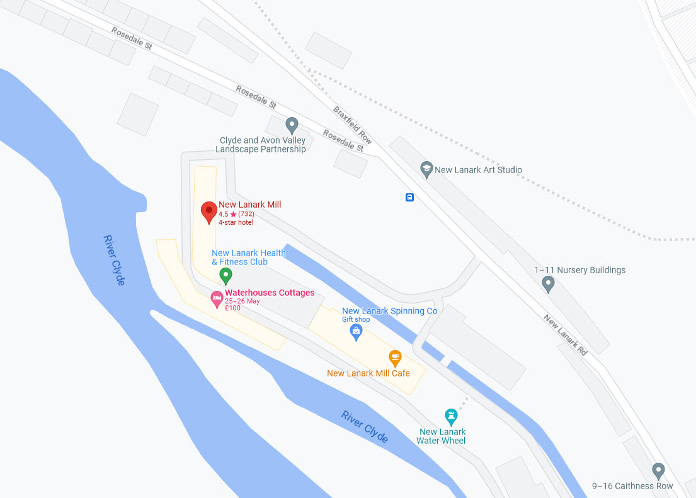

The New Lanark Mills Hotel is a historic hotel located in New Lanark, Scotland. Situated within the UNESCO World Heritage Site of New Lanark, the hotel offers a unique blend of history, natural beauty, and modern comforts.
The hotel is set within a beautifully restored 18th-century cotton mill, which was once the heart of a thriving industrial community. Today, it stands as a testament to the industrial heritage of the region. The architecture and design of the hotel seamlessly integrate the old and the new, preserving the charm of the original mill while providing contemporary amenities.
Guests staying at the New Lanark Mills Hotel can enjoy comfortable and stylish accommodations. The rooms are tastefully furnished, offering a cozy retreat after a day of exploration. Some rooms provide stunning views of the River Clyde or the surrounding countryside.The hotel's location is ideal for nature lovers and history enthusiasts alike. The picturesque village of New Lanark offers scenic walks, with the stunning Falls of Clyde just a short distance away. Visitors can explore the interactive New Lanark Visitor Centre to learn about the history of the mill and its significance.
The hotel provides excellent dining options, including a restaurant that showcases locally sourced Scottish cuisine. Guests can savor delicious meals while enjoying the ambiance of the historic surroundings.Additionally, the New Lanark Mills Hotel serves as a gateway to explore the wider region. The nearby town of Lanark offers further attractions, such as historic landmarks, local markets, and quaint shops.
Overall, the New Lanark Mills Hotel offers a unique and memorable experience for travelers seeking a blend of history, natural beauty, and relaxation. It provides a charming retreat where guests can immerse themselves in the rich heritage of Scotland's industrial past while enjoying modern comforts and hospitality. 